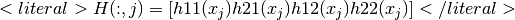

gf_asm¶
Synopsis
{...} = gf_asm('generic', mesh_im mim, int order, string expression, int region, [model model,] [string varname, int is_variable[, {mesh_fem mf, mesh_imd mimd}], value], ...)
M = gf_asm('mass matrix', mesh_im mim, mesh_fem mf1[, mesh_fem mf2[, int region]])
L = gf_asm('laplacian', mesh_im mim, mesh_fem mf_u, mesh_fem mf_d, vec a[, int region])
Le = gf_asm('linear elasticity', mesh_im mim, mesh_fem mf_u, mesh_fem mf_d, vec lambda_d, vec mu_d[, int region])
TRHS = gf_asm('nonlinear elasticity', mesh_im mim, mesh_fem mf_u, vec U, string law, mesh_fem mf_d, mat params, {'tangent matrix'|'rhs'|'incompressible tangent matrix', mesh_fem mf_p, vec P|'incompressible rhs', mesh_fem mf_p, vec P})
A = gf_asm('helmholtz', mesh_im mim, mesh_fem mf_u, mesh_fem mf_d, vec k[, int region])
A = gf_asm('bilaplacian', mesh_im mim, mesh_fem mf_u, mesh_fem mf_d, vec a[, int region])
A = gf_asm('bilaplacian KL', mesh_im mim, mesh_fem mf_u, mesh_fem mf_d, vec a, vec nu[, int region])
V = gf_asm('volumic source', mesh_im mim, mesh_fem mf_u, mesh_fem mf_d, vec fd[, int region])
B = gf_asm('boundary source', int bnum, mesh_im mim, mesh_fem mf_u, mesh_fem mf_d, vec G)
{HH, RR} = gf_asm('dirichlet', int bnum, mesh_im mim, mesh_fem mf_u, mesh_fem mf_d, mat H, vec R [, scalar threshold])
Q = gf_asm('boundary qu term',int boundary_num, mesh_im mim, mesh_fem mf_u, mesh_fem mf_d, mat q)
gf_asm('define function', string name, int nb_args, string expression[, string expression_derivative_t[, string expression_derivative_u]])
gf_asm('undefine function', string name)
gf_asm('define linear hardening function', string name, scalar sigma_y0, scalar H, ... [string 'Frobenius'])
gf_asm('define Ramberg Osgood hardening function', string name, scalar sigma_ref, {scalar eps_ref | scalar E, scalar alpha}, scalar n[, string 'Frobenius'])
gf_asm('expression analysis', string expression [, {@tm mesh | mesh_im mim}] [, der_order] [, model model] [, string varname, int is_variable[, {mesh_fem mf | mesh_imd mimd}], ...])
{...} = gf_asm('volumic' [,CVLST], expr [, mesh_ims, mesh_fems, data...])
{...} = gf_asm('boundary', int bnum, string expr [, mesh_im mim, mesh_fem mf, data...])
Mi = gf_asm('interpolation matrix', mesh_fem mf, {mesh_fem mfi | vec pts})
Me = gf_asm('extrapolation matrix',mesh_fem mf, {mesh_fem mfe | vec pts})
B = gf_asm('integral contact Uzawa projection', int bnum, mesh_im mim, mesh_fem mf_u, vec U, mesh_fem mf_lambda, vec vec_lambda, mesh_fem mf_obstacle, vec obstacle, scalar r [, {scalar coeff | mesh_fem mf_coeff, vec coeff} [, int option[, scalar alpha, vec W]]])
B = gf_asm('level set normal source term', int bnum, mesh_im mim, mesh_fem mf_u, mesh_fem mf_lambda, vec vec_lambda, mesh_fem mf_levelset, vec levelset)
M = gf_asm('lsneuman matrix', mesh_im mim, mesh_fem mf1, mesh_fem mf2, levelset ls[, int region])
M = gf_asm('nlsgrad matrix', mesh_im mim, mesh_fem mf1, mesh_fem mf2, levelset ls[, int region])
M = gf_asm('stabilization patch matrix', @tm mesh, mesh_fem mf, mesh_im mim, real ratio, real h)
Description :
General assembly function.
Many of the functions below use more than one mesh_fem: the main mesh_fem (mf_u) used for the main unknown, and data mesh_fem (mf_d) used for the data. It is always assumed that the Qdim of mf_d is equal to 1: if mf_d is used to describe vector or tensor data, you just have to “stack” (in fortran ordering) as many scalar fields as necessary.
Command list :
{...} = gf_asm('generic', mesh_im mim, int order, string expression, int region, [model model,] [string varname, int is_variable[, {mesh_fem mf, mesh_imd mimd}], value], ...)
High-level generic assembly procedure for volumic or boundary assembly.
Performs the generic assembly of <literal>expression</literal> with the integration method <literal>mim</literal> on the mesh region of index <literal>region</literal> (-1 means all the element of the mesh). The same mesh should be shared by the integration method and all the finite element methods or mesh_im_data corresponding to the variables.
<literal>order</literal> indicates either that the (scalar) potential (order = 0) or the (vector) residual (order = 1) or the tangent (matrix) (order = 2) is to be computed.
<literal>model</literal> is an optional parameter allowing to take into account all variables and data of a model.
The variables and constant (data) are listed after the region number (or optionally the model). For each variable/constant, first the variable/constant name should be given (as it is referred in the assembly string), then 1 if it is a variable or 0 for a constant, then the finite element method if it is a fem variable/constant or the mesh_im_data if it is data defined on integration points, and the vector representing the value of the variable/constant. It is possible to give an arbitrary number of variable/constant. The difference between a variable and a constant is that automatic differentiation is done with respect to variables only (see GetFEM++ user documentation). Test functions are only available for variables, not for constants.
Note that if several variables are given, the assembly of the tangent matrix/residual vector will be done considering the order in the call of the function (the degrees of freedom of the first variable, then of the second, and so on). If a model is provided, all degrees of freedom of the model will be counted first.
For example, the L2 norm of a vector field “u” can be computed with:
gf_compute('L2 norm') or with the square root of: gf_asm('generic', mim, 0, 'u.u', -1, 'u', 1, mf, U);The nonhomogeneous Laplacian stiffness matrix of a scalar field can be evaluated with:
gf_asm('laplacian', mim, mf, mf_data, A) or equivalently with: gf_asm('generic', mim, 2, 'A*Grad_Test2_u.Grad_Test_u', -1, 'u', 1, mf, U, 'A', 0, mf_data, A);M = gf_asm('mass matrix', mesh_im mim, mesh_fem mf1[, mesh_fem mf2[, int region]])
Assembly of a mass matrix.
Return a spmat object.
L = gf_asm('laplacian', mesh_im mim, mesh_fem mf_u, mesh_fem mf_d, vec a[, int region])
Assembly of the matrix for the Laplacian problem.
<latex style=”text”><![CDATA[nablacdot(a(x)nabla u)]]></latex> with <literal>a</literal> a scalar.
Return a spmat object.
Le = gf_asm('linear elasticity', mesh_im mim, mesh_fem mf_u, mesh_fem mf_d, vec lambda_d, vec mu_d[, int region])
Assembles of the matrix for the linear (isotropic) elasticity problem.
<latex style=”text”><![CDATA[nablacdot(C(x):nabla u)]]></latex> with <latex style=”text”><![CDATA[C]]></latex> defined via <literal>lambda_d</literal> and <literal>mu_d</literal>.
Return a spmat object.
TRHS = gf_asm('nonlinear elasticity', mesh_im mim, mesh_fem mf_u, vec U, string law, mesh_fem mf_d, mat params, {'tangent matrix'|'rhs'|'incompressible tangent matrix', mesh_fem mf_p, vec P|'incompressible rhs', mesh_fem mf_p, vec P})
Assembles terms (tangent matrix and right hand side) for nonlinear elasticity.
The solution <literal>U</literal> is required at the current time-step. The <literal>law</literal> may be choosen among:
- ‘SaintVenant Kirchhoff’: Linearized law, should be avoided). This law has the two usual Lame coefficients as parameters, called lambda and mu.
- ‘Mooney Rivlin’: This law has three parameters, called C1, C2 and D1. Can be preceded with the words ‘compressible’ or ‘incompressible’ to force a specific version. By default, the incompressible version is considered which requires only the first two material coefficients.
- ‘neo Hookean’: A special case of the ‘Mooney Rivlin’ law that requires one material coefficient less (C2 = 0). By default, its compressible version is used.
- ‘Ciarlet Geymonat’: This law has 3 parameters, called lambda, mu and gamma, with gamma chosen such that gamma is in ]-lambda/2-mu, -mu[.
The parameters of the material law are described on the mesh_fem <literal>mf_d</literal>. The matrix <literal>params</literal> should have <literal>nbdof(mf_d)</literal> columns, each row correspounds to a parameter.
The last argument selects what is to be built: either the tangent matrix, or the right hand side. If the incompressibility is considered, it should be followed by a mesh_fem <literal>mf_p</literal>, for the pression.
Return a spmat object (tangent matrix), vec object (right hand side), tuple of spmat objects (incompressible tangent matrix), or tuple of vec objects (incompressible right hand side).
A = gf_asm('helmholtz', mesh_im mim, mesh_fem mf_u, mesh_fem mf_d, vec k[, int region])
Assembly of the matrix for the Helmholtz problem.
<latex style=”text”><![CDATA[Delta u + k^2 u]]></latex> = 0, with <literal>k</literal> complex scalar.
Return a spmat object.
A = gf_asm('bilaplacian', mesh_im mim, mesh_fem mf_u, mesh_fem mf_d, vec a[, int region])
Assembly of the matrix for the Bilaplacian problem.
<latex style=”text”><![CDATA[Delta(a(x)Delta u) = 0]]></latex> with <literal>a</literal> scalar.
Return a spmat object.
A = gf_asm('bilaplacian KL', mesh_im mim, mesh_fem mf_u, mesh_fem mf_d, vec a, vec nu[, int region])
Assembly of the matrix for the Bilaplacian problem with Kirchhoff-Love formulation.
<latex style=”text”><![CDATA[Delta(a(x)Delta u) = 0]]></latex> with <literal>a</literal> scalar.
Return a spmat object.
V = gf_asm('volumic source', mesh_im mim, mesh_fem mf_u, mesh_fem mf_d, vec fd[, int region])
Assembly of a volumic source term.
Output a vector <literal>V</literal>, assembled on the mesh_fem <literal>mf_u</literal>, using the data vector <literal>fd</literal> defined on the data mesh_fem <literal>mf_d</literal>. <literal>fd</literal> may be real or complex-valued.
Return a vec object.
B = gf_asm('boundary source', int bnum, mesh_im mim, mesh_fem mf_u, mesh_fem mf_d, vec G)
Assembly of a boundary source term.
<literal>G</literal> should be a [Qdim x N] matrix, where N is the number of dof of <literal>mf_d</literal>, and Qdim is the dimension of the unkown u (that is set when creating the mesh_fem).
Return a vec object.
{HH, RR} = gf_asm('dirichlet', int bnum, mesh_im mim, mesh_fem mf_u, mesh_fem mf_d, mat H, vec R [, scalar threshold])
Assembly of Dirichlet conditions of type <literal>h.u = r</literal>.
Handle <literal>h.u = r</literal> where h is a square matrix (of any rank) whose size is equal to the dimension of the unkown u. This matrix is stored in <literal>H</literal>, one column per dof in <literal>mf_d</literal>, each column containing the values of the matrix h stored in fortran order:

if u is a 2D vector field.
Of course, if the unknown is a scalar field, you just have to set <literal>H = ones(1, N)</literal>, where N is the number of dof of <literal>mf_d</literal>.
This is basically the same than calling gf_asm(‘boundary qu term’) for <literal>H</literal> and calling gf_asm(‘neumann’) for <literal>R</literal>, except that this function tries to produce a ‘better’ (more diagonal) constraints matrix (when possible).
See also gf_spmat_get(spmat S, ‘Dirichlet_nullspace’).
Q = gf_asm('boundary qu term',int boundary_num, mesh_im mim, mesh_fem mf_u, mesh_fem mf_d, mat q)
Assembly of a boundary qu term.
<literal>q</literal> should be be a [Qdim x Qdim x N] array, where N is the number of dof of <literal>mf_d</literal>, and Qdim is the dimension of the unkown u (that is set when creating the mesh_fem).
Return a spmat object.
gf_asm('define function', string name, int nb_args, string expression[, string expression_derivative_t[, string expression_derivative_u]])
Define a new function <literal>name</literal> which can be used in high level generic assembly. The function can have one or two parameters. In <literal>expression</literal> all available predefined function or operation of the generic assembly can be used. However, no reference to some variables or data can be specified. The argument of the function is <literal>t</literal> for a one parameter function and <literal>t</literal> and <literal>u</literal> for a two parameter function. For instance ‘sin(pi*t)+2*t*t’ is a valid expression for a one parameter function and ‘sin(max(t,u)*pi)’ is a valid expression for a two parameters function. <literal>expression_derivative_t</literal> and <literal>expression_derivative_u</literal> are optional expressions for the derivatives with respect to <literal>t</literal> and <literal>u</literal>. If they are not furnished, a symbolic derivation is used.gf_asm('undefine function', string name)
Cancel the definition of a previously defined function <literal>name</literal> for the high level generic assembly.gf_asm('define linear hardening function', string name, scalar sigma_y0, scalar H, ... [string 'Frobenius'])
Define a new linear hardening function under the name <literal>name</literal>, with initial yield stress <literal>sigma_y0</literal> and hardening modulus H. If an extra string argument with the value ‘Frobenius’ is provided, the hardening function is expressed in terms of Frobenius norms of its input strain and output stress, instead of their Von-Mises equivalents.gf_asm('define Ramberg Osgood hardening function', string name, scalar sigma_ref, {scalar eps_ref | scalar E, scalar alpha}, scalar n[, string 'Frobenius'])
Define a new Ramberg Osgood hardening function under the name <literal>name</literal>, with initial yield stress <literal>sigma_y0</literal> and hardening modulus H. If an extra string argument with the value ‘Frobenius’ is provided, the hardening function is expressed in terms of Frobenius norms of its input strain and output stress, instead of their Von-Mises equivalents.gf_asm('expression analysis', string expression [, {@tm mesh | mesh_im mim}] [, der_order] [, model model] [, string varname, int is_variable[, {mesh_fem mf | mesh_imd mimd}], ...])
Analyse a high-level generic assembly expression and print information about the provided expression.{...} = gf_asm('volumic' [,CVLST], expr [, mesh_ims, mesh_fems, data...])
Low-level generic assembly procedure for volumic assembly.
The expression <literal>expr</literal> is evaluated over the mesh_fem’s listed in the arguments (with optional data) and assigned to the output arguments. For details about the syntax of assembly expressions, please refer to the getfem user manual (or look at the file getfem_assembling.h in the getfem++ sources).
For example, the L2 norm of a field can be computed with:
gf_compute('L2 norm') or with the square root of: gf_asm('volumic','u=data(#1); V()+=u(i).u(j).comp(Base(#1).Base(#1))(i,j)',mim,mf,U)The Laplacian stiffness matrix can be evaluated with:
gf_asm('laplacian',mim, mf, mf_data, A) or equivalently with: gf_asm('volumic','a=data(#2);M(#1,#1)+=sym(comp(Grad(#1).Grad(#1).Base(#2))(:,i,:,i,j).a(j))', mim,mf,mf_data,A);{...} = gf_asm('boundary', int bnum, string expr [, mesh_im mim, mesh_fem mf, data...])
Low-level generic boundary assembly.
See the help for gf_asm(‘volumic’).
Mi = gf_asm('interpolation matrix', mesh_fem mf, {mesh_fem mfi | vec pts})
Build the interpolation matrix from a mesh_fem onto another mesh_fem or a set of points.
Return a matrix <literal>Mi</literal>, such that <literal>V = Mi.U</literal> is equal to gf_compute(‘interpolate_on’,mfi). Useful for repeated interpolations. Note that this is just interpolation, no elementary integrations are involved here, and <literal>mfi</literal> has to be lagrangian. In the more general case, you would have to do a L2 projection via the mass matrix.
<literal>Mi</literal> is a spmat object.
Me = gf_asm('extrapolation matrix',mesh_fem mf, {mesh_fem mfe | vec pts})
Build the extrapolation matrix from a mesh_fem onto another mesh_fem or a set of points.
Return a matrix <literal>Me</literal>, such that <literal>V = Me.U</literal> is equal to gf_compute(‘extrapolate_on’,mfe). Useful for repeated extrapolations.
<literal>Me</literal> is a spmat object.
B = gf_asm('integral contact Uzawa projection', int bnum, mesh_im mim, mesh_fem mf_u, vec U, mesh_fem mf_lambda, vec vec_lambda, mesh_fem mf_obstacle, vec obstacle, scalar r [, {scalar coeff | mesh_fem mf_coeff, vec coeff} [, int option[, scalar alpha, vec W]]])
- Specific assembly procedure for the use of an Uzawa algorithm to solve
- contact problems. Projects the term $-(lambda - r (u_N-g))_-$ on the finite element space of $lambda$.
Return a vec object.
B = gf_asm('level set normal source term', int bnum, mesh_im mim, mesh_fem mf_u, mesh_fem mf_lambda, vec vec_lambda, mesh_fem mf_levelset, vec levelset)
Performs an assembly of the source term represented by <literal>vec_lambda</literal> on <literal>mf_lambda</literal> considered to be a component in the direction of the gradient of a levelset function (normal to the levelset) of a vector field defined on <literal>mf_u</literal> on the boundary <literal>bnum</literal>.
Return a vec object.
M = gf_asm('lsneuman matrix', mesh_im mim, mesh_fem mf1, mesh_fem mf2, levelset ls[, int region])
Assembly of a level set Neuman matrix.
Return a spmat object.
M = gf_asm('nlsgrad matrix', mesh_im mim, mesh_fem mf1, mesh_fem mf2, levelset ls[, int region])
Assembly of a nlsgrad matrix.
Return a spmat object.
M = gf_asm('stabilization patch matrix', @tm mesh, mesh_fem mf, mesh_im mim, real ratio, real h)
Assembly of stabilization patch matrix .
Return a spmat object.

前のトピックへ
次のトピックへ
Download
Main documentations
- GetFEM++ User documentation
- Python Interface
- Matlab Interface
- Scilab Interface
- Gmm++
- GetFEM++ project